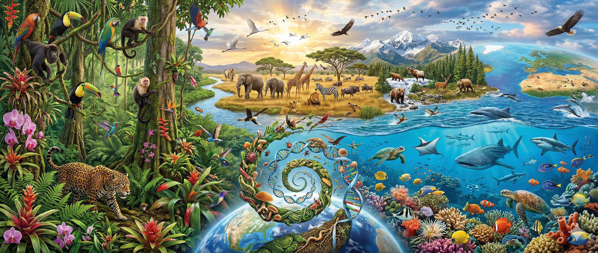
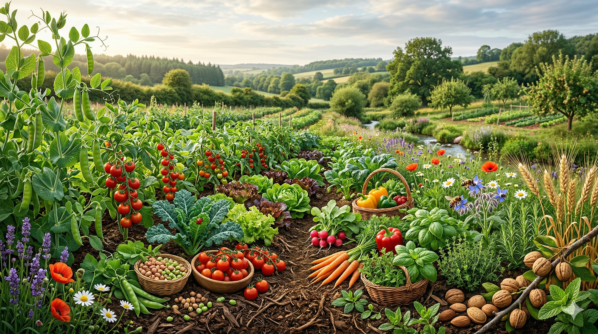
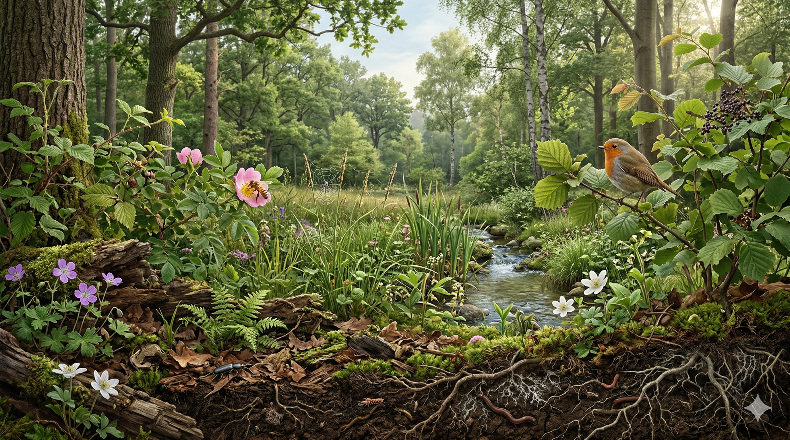
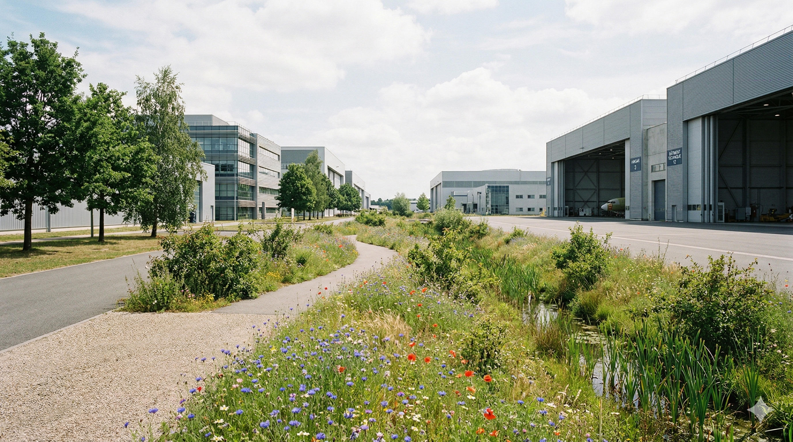
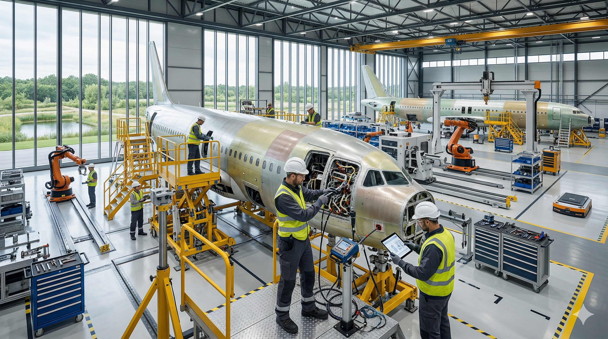
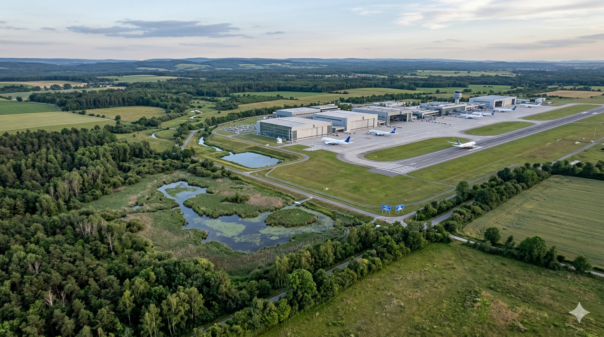

01
Módulo 1
20–25 min

Foundations of biodiversity
Understand what biodiversity is, why it matters, and what is at stake.
AvailableVisual journey
Open module
Un recorrido digital para entender qué es la biodiversidad, por qué importa en Airbus, cómo se relaciona con decisiones cotidianas y cómo traducir ese aprendizaje a mejoras creíbles y aplicables en tu entorno de trabajo.
Premium experience, visual rhythm and a clear journey from the fundamentals to applied action.
La biodiversidad afecta a riesgos, recursos, decisiones, comunicación y credibilidad dentro de Airbus. Comprenderla bien es el primer paso para actuar con más criterio.
Biodiversity influences risks, resources, decisions, communication and credibility within Airbus.
Purchasing, food, maintenance, communication and the way space is used also matter.
Not every green initiative creates real ecological value.
Acting and communicating with sound judgement is key to avoiding empty messages.
Seis módulos estructurados, casos prácticos aplicados, actividades breves, progreso visible y un cierre orientado a formular tu propio plan de acción.
El curso está orientado a trabajadores y trabajadoras de Airbus, tanto de planta como de oficina, que quieran comprender mejor la biodiversidad y convertir esa comprensión en propuestas más creíbles.
Adult and professional.
Rigorously explained.
Applied to the Airbus context.
Fundamentals.
Airbus and decisions.
Action with evidence.
By the end, you will have a stronger basis for interpreting biodiversity, assessing environmental initiatives more effectively and formulating applicable proposals with greater judgement and credibility.
Aquí encontrarás una secuencia clara de aprendizaje: comprender qué es la biodiversidad, ver cómo se relaciona con Airbus, conectarla con decisiones cotidianas, distinguir acciones sólidas de gestos simbólicos, entender qué medir y terminar con una propuesta propia aplicable.

Understand what biodiversity is, why it matters, and what is at stake.
Analyse how aeronautics affects biodiversity from design to end of life.

Explore how food, consumption and everyday habits influence biodiversity.

Learn to distinguish between solid interventions, partial improvements and cosmetic actions.

Learn how to measure, justify and communicate impact with greater credibility.
Turn learning into a proposal applicable to your work environment.
En este módulo construirás la base del curso: qué significa biodiversidad, cuáles son sus tres niveles principales, qué funciones ecológicas sostiene, por qué no debe reducirse a una lista de especies visibles y qué presiones están provocando su pérdida.
La biodiversidad no se limita a especies visibles o espacios naturales emblemáticos. Incluye relaciones, procesos, interacciones y sistemas que sostienen la vida y buena parte de la actividad humana.
Biodiversity is the variety of life in all its forms, its relationships and the systems that sustain it. It includes microorganisms, plants, animals, soils, habitats and the ecological connections between them.
Without a solid foundation it is easy to oversimplify, communicate poorly or support initiatives with little real ecological value. This module aims to avoid that superficiality from the start.
Genes, especies, ecosistemas, procesos ecológicos, funciones esenciales y relaciones entre organismos.

Entender estos tres niveles ayuda a no reducir la biodiversidad a un único plano.
It is the variability within the same species. It enables adaptation, resistance to disease and the capacity to respond to change.
It is the variety of species present in a territory or ecological system. The greater the diversity, the more functions the whole system can sustain.
It is the variety of habitats, communities and natural processes: forests, wetlands, soils, rivers, scrublands and other systems that sustain different conditions for life.
When biodiversity deteriorates, species do not just disappear: ecological functions we depend on also weaken.
Without living and functional soils, ecological systems lose their ability to sustain biodiversity and productivity.
Many species depend on pollinators to reproduce and maintain food webs and food systems.
Biodiversity helps filter, regulate and store water under better ecological conditions.
Diverse ecosystems respond better to change and disturbance than simplified systems.
Ecological relationships help contain imbalances and prevent problematic outbreaks.
The greater the ecological diversity and complexity, the greater the system’s capacity to adapt.
Biodiversity loss does not have a single cause. Several pressures act at the same time.
Transforming habitats into infrastructure or simplified systems reduces ecological complexity and connectivity.
It alters soil, water and air; damages sensitive species and modifies essential ecological processes.
Extracting resources beyond their regenerative capacity weakens populations and breaks ecological balances.
It disrupts biological cycles, shifts species and aggravates other existing pressures.
They can displace local species, compete for resources, alter food webs and change how the system functions in a short time.
The variety of life, its relationships and the systems that sustain it.
Financial diversity is not part of biodiversity.
Because it helps avoid oversimplification and supports better designed actions.
Think about an outdoor area, an awareness action, a maintenance practice or an environmental improvement measure.

Este módulo estudia cómo la aeronáutica afecta a la biodiversidad desde la cuna hasta la tumba: diseño, materiales, fabricación, operación, mantenimiento, retirada del servicio y reciclaje.
A method for evaluating environmental impacts across all phases of a product or system.
Their value depends on demanding sustainability criteria and on life-cycle performance.
It establishes international frameworks and methodologies for civil aviation.
An international framework that introduces methodologies and sustainability criteria for eligible fuels.
An aircraft should not be assessed only when it flies. Design, material extraction, manufacturing, logistics, operation, maintenance, retirement and recycling are all part of the same system.
The use phase drives much of the climate footprint, but biodiversity is not limited to emissions: local and material impacts also appear at different stages.
Part of the damage is local and direct, while another part is indirect or shifted to the supply chain, fuels or materials.


It shapes mass, materials, efficiency, maintainability and recyclability.
It concentrates material consumption, energy use, waste and pressure on raw materials.
Fuel, noise, lighting, wildlife, runoff and airport activity all come into play.
Material recovery, part reuse and design for disassembly matter here.
Habitat loss and degradation, fragmentation, simplification of the environment and interactions with wildlife due to operational safety.
They alter behaviour, communication, reproduction and spatial use in numerous species.
Emissions alter temperature, precipitation, phenology and water availability.
Part of the pressure occurs where materials and energy are extracted, processed and transported.
More efficient design, materials, sustainable fuels, operations and circularity do not solve the same thing. The important lesson is to learn how to read the full system.
This module explains why food and everyday habits influence biodiversity. It is not only about what we eat, but about the system that makes that food possible.
What seems like an individual decision rests on production and consumption chains that can intensify or reduce pressure on soils, water, habitats and marine ecosystems.
Before reaching a cafeteria or a table, food has already passed through land-use, irrigation, fertilisation, transport, processing and storage decisions.
The aim is to provide judgement for reading the food system more clearly: which patterns exert more pressure and which changes can reduce it.


It includes production, processing, transport, distribution, catering, consumption and waste.
It is the way an activity reduces habitat quality or alters ecological processes.
It is not an isolated purchase but a repeated combination of frequency, quantity, origin and waste.
It helps better interpret origin, production system, processing and waste.
Forests, grasslands and wetlands are transformed into agricultural areas, livestock systems or associated infrastructure.
Less crop diversity, less landscape heterogeneity, fewer refuges and fewer ecological relationships.
Intensive irrigation, fertilisers and effluents alter rivers, soils, aquifers and receiving ecosystems.
Overfishing, by-catch, degradation of coastal habitats and pressure on food webs.
Cafeteria, vending, catering and internal purchasing can be analysed more effectively when questions are added about consumption patterns, waste, traceability and likely pressure on biodiversity.
This module explains the difference between conserving, preserving, restoring and applying nature-based solutions, and how to distinguish between interventions with real ecological value and actions that are mainly cosmetic.
It prevents further deterioration, maintains ecological integrity and protects biodiversity before the system degrades further.
It seeks to assist the recovery of a degraded ecosystem in order to improve structure, composition, function and ecological trajectory.
They protect, manage or restore ecosystems to respond to social challenges while generating benefits for biodiversity and people.


You need to understand pressures, the initial state and the degradation trajectory.
Recovery needs a reasonable reference condition that is coherent with the site.
If the main pressure remains active, restoration is weakened.
What matters is whether it improves infiltration, soil, refuge, connectivity or regeneration.
Without monitoring, improvement remains a claim that is hard to defend.
The solution must fit the real use of the site and its operational constraints.
It reduces pressures, improves ecological integrity and can be justified with objectives and indicators.
It contributes something, but in a partial or narrow way, without substantially changing the condition of the system.
It prioritises appearance or visual order without a significant ecological improvement.
At Airbus, not everything valuable will be spectacular, and not everything eye-catching will be ecologically sound. This criterion helps review surroundings, maintenance, communication and plant improvements.
This module explains how to turn biodiversity actions into initiatives that are measurable, defensible and communicable with greater credibility.
A variable that summarises complex information to support decisions.
The starting point against which changes are compared.
Reasonable substitutes are often used, and it is always advisable to explain uncertainty and the real scope.


Soil sealing, fragmentation, pollution, invasive species, noise or lighting.
Condition of the system: habitat, native vegetation, soil, connectivity or water.
What is done: treated area, management changes, protocols or budget.
What actually changes: improved native cover, connectivity or pressure reduction.
Define which decision needs support and which mistake would be most costly.
Define the place, time horizon and review frequency.
Choose sensitive and scientifically defensible variables.
Set the starting point, target and criterion for change.
Explain limits, biases, information gaps and confidence levels.
Measure in order to correct and learn, not just to report.
The value lies in building monitoring systems that are sober, clear and defensible, with a clear separation between pressure, state, response and result.
This module turns the course learning into a proposal applicable to your work environment. The idea is to turn what you have learned into a clear, useful and realistic proposal for Airbus.
The natural close of the course is to turn the knowledge acquired into a reasonable action adapted to the real Airbus context.
A good proposal responds to a well-defined problem, fits the site and can be explained with technical and operational judgement.
The goal is to identify a real opportunity, prioritise a feasible action and formulate a proposal that can be discussed maturely within Airbus.


What improvement opportunity have you identified, and where does it appear within Airbus?
Which pressure or weakness does it correct, and why does it deserve priority?
What exactly would you do, and with what scope or pilot format?
Which indicator would you track, and within what timeframe would it make sense to review it?
Soil management, drainage, lighting, mowing, vegetation, connectivity or invasive species.
Review recurring practices with ecological logic, not only operational logic.
Introduce environmental and ecological criteria that are more useful and verifiable.
Improve how biodiversity is explained, prioritised or integrated within the organisation.
After this module, the journey should translate into a proposal that is better focused, more restrained, more feasible and more credible within Airbus.